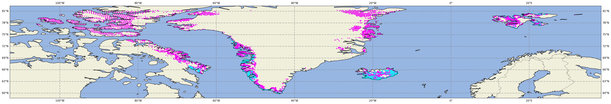
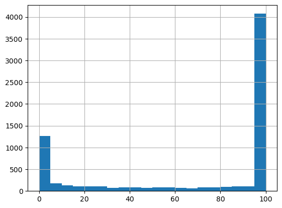
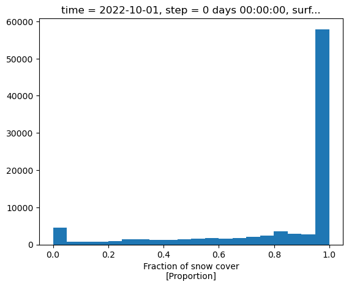
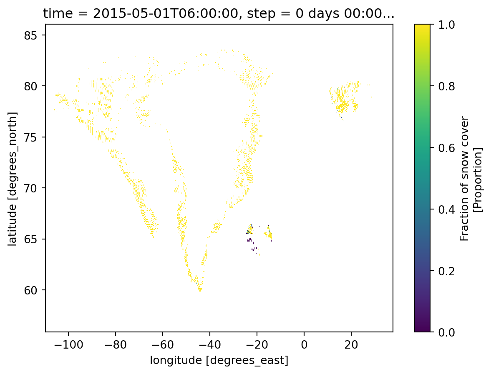

Writing here the methodology followed to verify the data snow cover data from CRYO againgst the snow cover data from CARRA
naive approach
The data provided in the snow_cryo files consists of points on a 5-10km grid, mainly over Greenland. Since this part is covered by the CARRA west domain only this data will be used for the moment. The files are provided once a day in ascii format
where the first two columns are datetime ad hour, followed by lat and lon and the probability of snow. The last column is some sort of quality control flag. The model data is provided as fractio of snow cover (shortName: fscov, grib2 parameter: 260289)
import numpy as npimport osimport sysimport matplotlib as mplimport matplotlib.pyplot as pltimport matplotlib.cm as cmimport pandas as pdimport cartopy.crs as ccrsimport cartopy.feature as cfeatureimport xarray as xrcryo_obs="/media/cap/7fed51bd-a88e-4971-9656-d617655b6312/data/CERISE/CRYO_SW"def get_data_fromtxt(txtFile): lat = [] lon = [] snowFrac = [] f =open(txtFile, 'r')for line in f: line = line.strip() columns = line.split() lat.append(float(columns[2])) lon.append(float(columns[3])) snowFrac.append(float(columns[4])) f.close()return lat, lon, snowFracsnow_file=os.path.join(cryo_obs,"snow_cryo_5-10km_2022100306.dat")lats,lons,snow_prob = get_data_fromtxt(snow_file)#mycmap = plt.cm.get_cmap('cool') #old style, deprecatedmycmap = mpl.colormaps["cool"]lowerLeftLat =60lowerLeftLon =-120upperRightLat =90upperRightLon =0lat_inter =10lon_inter =20#fig = plt.figure(figsize=(7.88,6.29), dpi=100)fig = plt.figure(figsize=(40, 60),dpi=100)ax = fig.add_subplot(111, projection=ccrs.PlateCarree())ax.add_feature(cfeature.BORDERS.with_scale('10m'), linestyle=':')ax.gridlines(crs=ccrs.PlateCarree(), draw_labels=True, linewidth=2, color='gray', alpha=0.5, linestyle='--')ax.coastlines()ax.add_feature(cfeature.LAND)ax.add_feature(cfeature.OCEAN)ax.scatter(lons, lats, edgecolor="none", s=10,c=snow_prob,cmap=mycmap)
<matplotlib.collections.PathCollection at 0x7f6bdeed7850>

Since the data from CARRA is gridded and the observation data is not, they will be put in the same grid using the scripts in the directory scr.
In order to compare both quantities, the information will be used to define a binary quantity defining points with snow or no-snow. Looking at the distribution of two sample dates from observation and forecast data. For the observation, the histogram of snow probability generally looks like this

cryo snow probability histogram
For the forecast, the histogram of fraction of snow cover looks like this 
Based on these plots, will be selecting snow probabilities over 90 % as “snow” (1.0, otherwise “no snow” (0.0) For the model, the threshold will be set at 80 %.
Putting the data in the same format
In order to place the data in the same grid, a grib file from CARRA in a regular lat lon grid will be used as template to place the snow data on the same grid. The points closest to the coordinates of the CARRA grid are chosen, using a nearest neighbour approach. The values are converted to snow or no snow following the thresholds above.
Note that the variable name “fscov” and parameter 260289 will continue to be used in the output grib file, since changing the name of the parameter name in the grib to a dummy “snow_no_snow” variable would imply creating a new variable definition in the grib tables.
<matplotlib.collections.QuadMesh at 0x7f6bdd19eb90>

The interpolated data put on the same grid for the snow-cryo files looks like this. For the model, all values were set to 1.0 if snow fraction is >= 0.8, while for the snow observations values were set to 1.0 if probability was equal or more than 90 %.
#‘Fraction_of_snow_cover_surface in binary_snow_cryo_201505_ll_grid_.png’ #‘Fraction_of_snow_cover_surface in binary_snow_model_201505_ll_grid.png’
[cryo snow model](./figs/Fraction_of_snow_cover_surface in binary_snow_model_201505_ll_grid_.png
 [cryo snow model](./figs/Fraction_of_snow_cover_surface in binary_snow_model_201505_ll_grid_.png
[cryo snow model](./figs/Fraction_of_snow_cover_surface in binary_snow_model_201505_ll_grid_.png